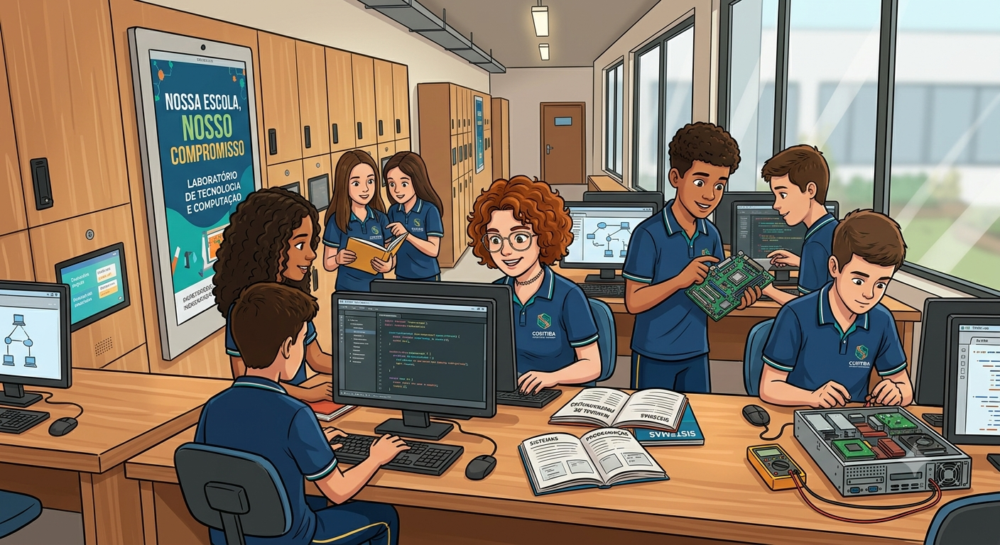
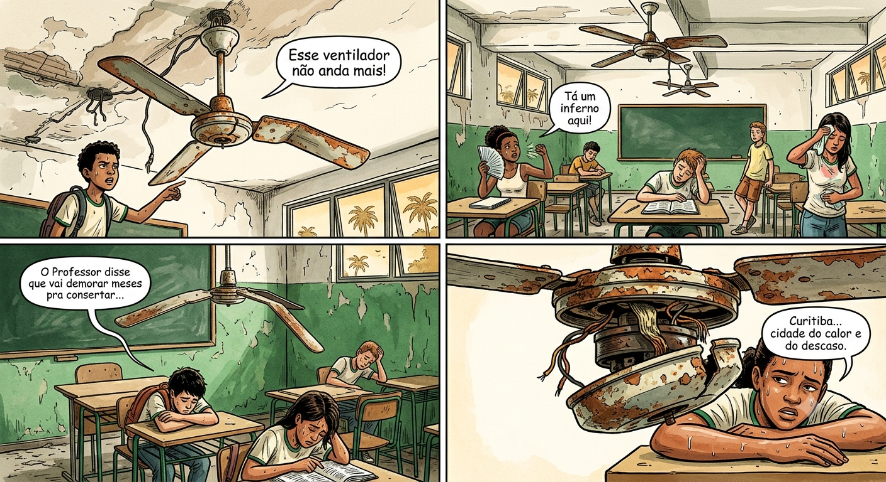
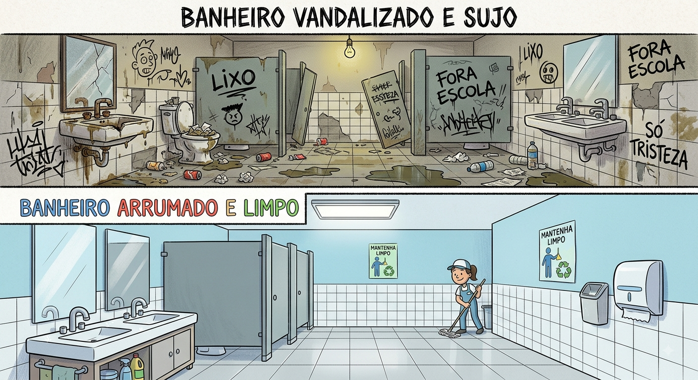
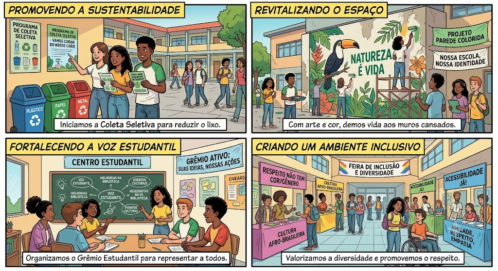

NOSSA ESCOLA NOSSO COMPROMISSO

O aprendizado ganha vida no laboratório de informática,
onde a curiosidade e o trabalho em equipe se transformam em inovação.Cuidar dos equipamentos,
compartilhar conhecimento e explorar novas tecnologias são atitudes que fortalecem nosso ambiente escolar e preparam cada estudante para os desafios do futuro.
O QUE NÓS PODEMOS FAZER PARA TORNAR NOSSA ESCOLA AINDA MELHOR?

Em dias quentes, o ventilador da sala de aula é essencial para manter o ambiente fresco e propício aos estudos.
aparelhos são danificados, têm suas grades quebradas ou sofrem com o acúmulo de sujeira e vandalismo, o conforto de toda a turma fica comprometido.
A manutenção simples, aliada ao uso correto e à limpeza periódica, garante que o ar volte a circular com eficiência.
Cuidar dos equipamentos de ventilação é garantir o bem-estar e o respeito ao espaço de todos.

O contraste entre um banheiro depredado e um ambiente limpo evidencia o impacto direto do vandalismo na rotina escolar.
Espaços pichados e danificados geram desconforto e insegurança, enquanto a preservação e a limpeza garantem bem-estar, higiene e respeito a todos os estudantes.
Preservar o patrimônio escolar é um dever coletivo que transforma o convivência diária.

A construção de um ambiente escolar mais vivo e acolhedor ganha força no Ensino Médio com o protagonismo dos próprios estudantes. Quando a comunidade escolar se une, a transformação acontece em várias frentes: Sustentabilidade em Ação: A implementação da coleta seletiva e o descarte correto do lixo reduzem o impacto ambiental e mantêm os espaços comuns organizados. Arte e Identidade: A pintura de murais e a revitalização de paredes desgastadas expressam a criatividade dos alunos e trazem cor e vida aos corredores. Voz e Liderança: A atuação do Grêmio Estudantil garante espaço para debate, promovendo a participação ativa nas decisões do ambiente escolar. Inclusão e Respeito: A realização de feiras culturais sobre diversidade e acessibilidade fortalece uma convivência pautada pela empatia e pelo respeito às diferenças. Cuidar do espaço onde aprendemos é o primeiro passo para transformar a sociedade ao nosso redor.